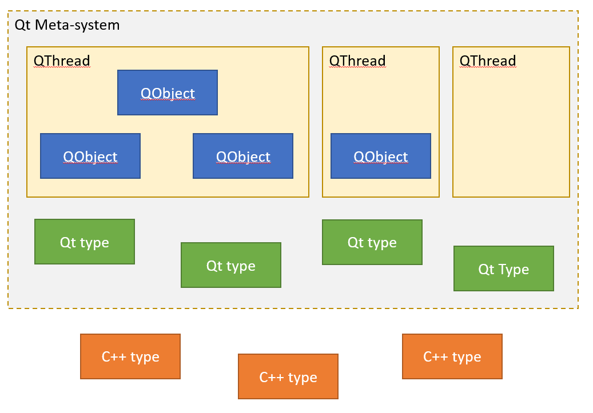

Однопоточный вариант
При работе Qt-приложения, для центрального объекта приложения QCoreApplication создается объект основного цикла приложения в виде инстанса класса QEventLoop. Другими словами, это объект обработки цикла событий. У данного объекта есть два метода:
Метод exec() содержит бесконечный цикл обработки сообщений (до получения QEventLoop события quit() ). А метод processEvents() ограничивается тем что обрабатывает накопившиеся в очереди сообщения и завершает свою работу.
Многопоточный вариант
Каждый QObject строго привязан к какому-то потоку QThread который, собственно, и занимается обслуживанием слотов и прочих событий данного объекта. Один поток может обслуживать сразу множество QObject или вообще ни одного, а вот QObject всегда имеет родительский поток и он всегда ровно один. По сути можно считать что каждый QThread «владеет» каким-то набором QObject. В терминологии Qt это называется Thread Affinity (). Попробуем для наглядности визуализировать:

Внутри каждого QThread спрятана очередь сообщений адресованных к объектам которыми данный QThread «владеет». В модели Qt предполагается что если мы хотим чтобы QObject сделал какое-либо действие, то мы «посылаем» данному QObject сообщение QEvent:
QCoreApplication::postEvent(QObject *receiver, QEvent *event, int priority);
В этом потоково-безопасном вызове Qt находит QThread которому принадлежит объект receiver, записывает QEvent в очередь сообщений этого потока и при необходимости «будит» этот поток. При этом ожидается что код работающий в данном QThread в какой-то момент после этого прочитает сообщение из очереди и выполнит соответствующее действие. Чтобы это действительно произошло, код в QThread должен войти в цикл обработки событий QEventLoop, создав соответствующий объект и позвав у него либо метод exec(), либо метод processEvents().